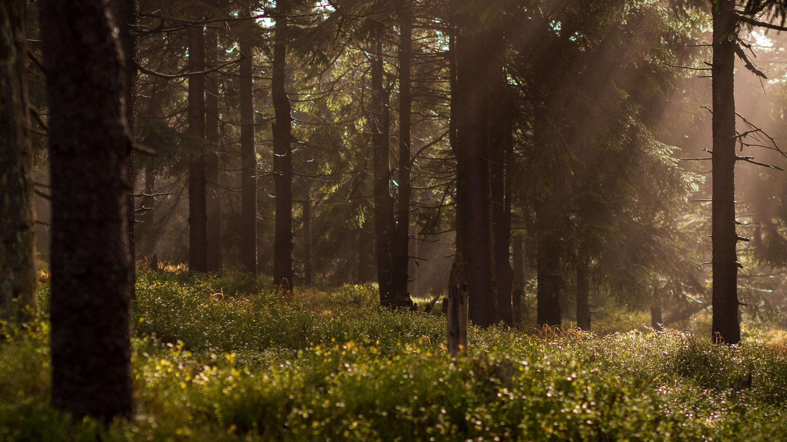

소중한 생명 식물.
언제부턴가 높은 빌딩들이 반짝이는 야경보다 자연으로 꽉차있는 풍경이 더 좋아졌다.
인간이 만든 높은 건물을 보면 저 회사에선, 저런집에 사는 사람들은 얼마나 많은 경쟁이 일어났을까,
얼마나 많이 뺐고 뺐기고 부딪혔을까. 라는 생각밖에 안들었다.
그게 나쁜건 아니지만 난 그 생각이 아프고 힘들었다.
그리고 더이상 이 아름다운 자연을 잃고싶지 않았다.

꽃이 좋으면 보러가자
꽃이 좋다는 사람들에게 묻겠다.
꽃 한송이가 예쁘던가? 아님 넓은 정원에 가득 차있는 꽃들이 예쁘던가?
나의 로망은 어딜 가나 누굴 만나나 인간과의 교류가 생기는 곳이 아닌
자연으로. 풀과 꽃과 나무들로.
아무 생각없이 그저 바라만 볼 수 있는 아무 생각이 안나는 그런 압도적인 대자연이 펼쳐진
그런 장소를 돌아다니며 여행하는게 나의 로망이다.
내가 좋아하는 영화들 중 상위권에 속하는 대부분의 영화는 한 회사의 애니메이션이다.
마법사가 성을 움직이며 돌아다니는 영화, 마녀가 빛자루를 타고 배달다니는 영화, 하늘에 성이 떠다니는 영화.
이 영화들을 보고 난 비슷한 감정들을 느꼈다.
세 영화에서의 각자 주인공들이 인간사회에 속해았을때와
자연속에 들어가 자유로울때 내가 보고 느낀 감정은 동일했다.
그렇다. 난 자연을 볼때 자유로움또한 느낀다.
아름다움으로 끝나지 않고 인간사회에서 벗어나 아무생각없이 자연을 보는걸 사랑한다.